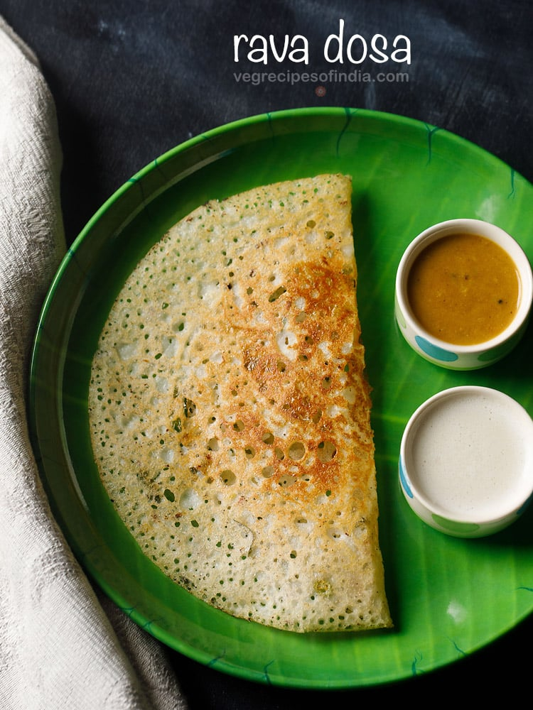

Rava Dosa Recipe
Rava dosa (also known as Suji ka Dosa) is a quick and popular variant of dosa from the South Indian cuisine. These are crispy, netted and thin crepes made with semolina (rava or cream of wheat), rice flour, all purpose flour and spices. These are incredibly easy to make and require no grinding or fermentation, unlike the traditional Dosa Recipe. Make a truly crispy Rava Dosa recipe – one that you will make again and again for a quick breakfast or snack.
How to make Rava Dosa
Make Thin Batter
1. Take ½ cup unroasted fine rava, ½ cup rice flour and ¼ cup all-purpose flour in a bowl.
2. Then add ⅓ cup chopped onions, 1 or 2 green chillies (about ½ to 1 teaspoon finely chopped), and ½ teaspoon finely chopped ginger.
3. Also add ½ teaspoon crushed black pepper, ½ teaspoon cumin seeds, 8 to 10 curry leaves (about 1 tablespoon chopped) and salt as required.
At this point you can also include 1 to 2 tablespoons of chopped coriander leaves, 2 tablespoons of fresh grated coconut or 1 to 2 tablespoons of chopped cashews.
4. Add 2.25 to 2.5 cups water. Depending on the quality of rava or suji and rice flour, you can add less or more water – from 2 to 2.5 cups water.
I added 2.25 cups of water. You can also use buttermilk instead of water.
5. Whisk till smooth without any lumps. The batter has to be flowing and thin.
6. Cover and let the batter rest for 20 to 30 minutes.
Once the batter rests, you will see that the rava and the flours have settled down and the water will be floating on top.
7. Before preparing dosa, mix the batter very well so that the flours and semolina that are at the bottom of the bowl are mixed evenly again.
Make Rava Dosa
8. Spread some oil on the tawa or skillet. Do make sure that the tawa is hot. Keep the flame to medium or medium-high before pouring the dosa batter.
You can also use butter or ghee or coconut oil. Sometimes I use coconut oil and it gives a really good flavor.
If using a cast iron skillet, I recommend to use one that is well seasoned. So that the batter does not stick to it. You can check below my tips on seasoning the cast iron skillet.
9. With a ladle pour the dosa batter. Start from the edges move towards the center.
10. If there are big or small gaps, then fill them lightly with the batter.
11. On a medium-low to medium heat, cook the dosa. If the tawa or pan becomes too hot, then you can reduce the heat.
12. When the top side firm up and looks cooked, then sprinkle ½ to 1 teaspoon oil on the top and sides.
13. Spread oil all over the dosa with a spoon.
14. Instant rava dosa takes a little longer time to cook than the regular plain dosa.